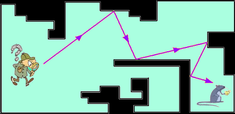

|

|
|
Abstract:
We consider direct visibility in simple orthogonal polygons and derive
tight lower and upper bounds on the number of strictly internal and external
visibility edges. We also show a lower bound of
⌈n⁄2⌉-1 on the number of diffuse
reflections required for completely illuminating an orthogonal polygon from an
arbitrary point inside it. Further, we derive lower bounds on the combinatorial
complexity of the visibility polygon of a point S after
k ≥ 1
specular reflections within special classes of polygons.
|

![[PHOTO]](../../images/knight_small.png)